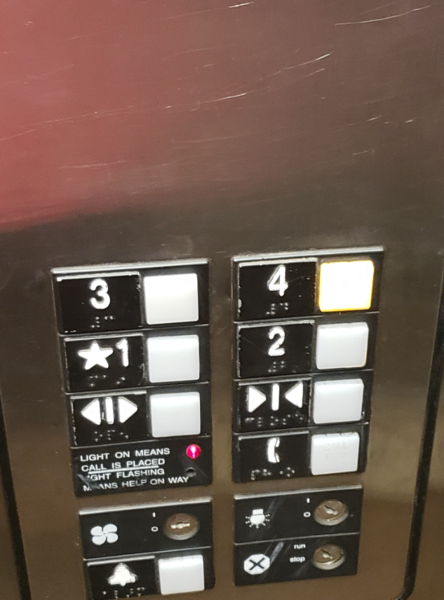

Homework 1: Elevator interface
Presentation site/readme
By: Caleb Horn
Links
Part C: Elevator at University Pointe

Elevator gif:

Problems with this design:
- While the elevator is pretty good, the open and close buttons are not immediately identifiable.
- I believe that it would be better if the buttons were in a row vertically.
- Whether the elevator is going up or down is not displayed, which is a problem.
- I think that the 1st floor should be labeled the ground floor.
Common Uses:
- Hit a button to go to desired floor.
- Hit a button to open door.
- Hit a button to close door.
- Display whether going up or down.
- Display current floor.
- The elevator should clearly display which direction it is going, what floor it is on, and what floor it is headed to.
Elevator touch screen interface (Screen size - 768 x 1024):

My thoughts on this design
- The floors are placed in ascending order from the ground floor to the sixth, as they do in the actual building.s
- Shows what is on the floor, so people know if they went to the wrong floor by mistake.
- The interface is simplistic, so as not to be confusing.
- The interface is similar to non touch screen interfaces, so should be easy to figure out.
- No way for the visualy impaired to know what to press.
- For a building with a lot of floors, this design would not work well.